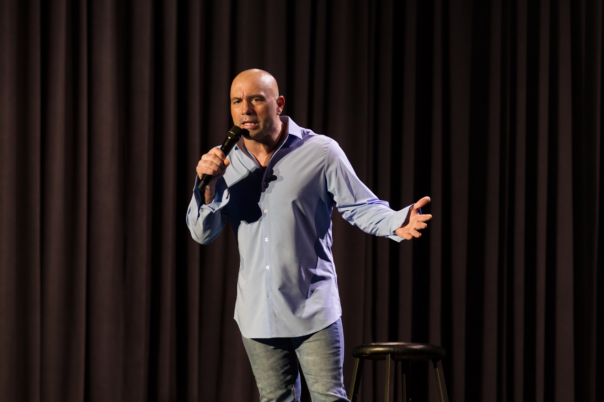
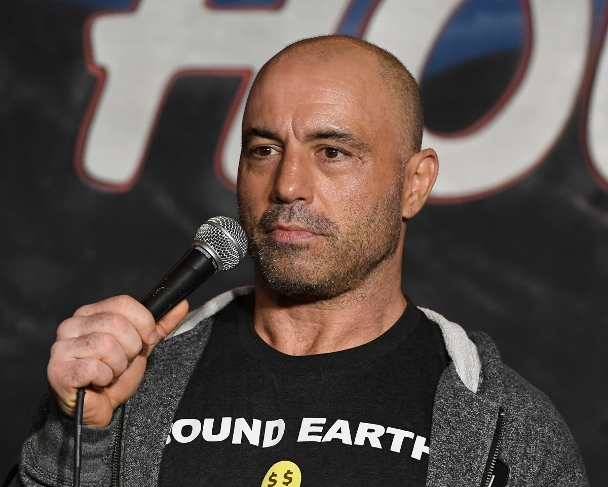
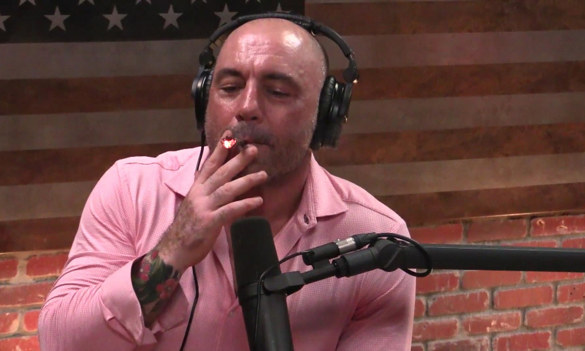
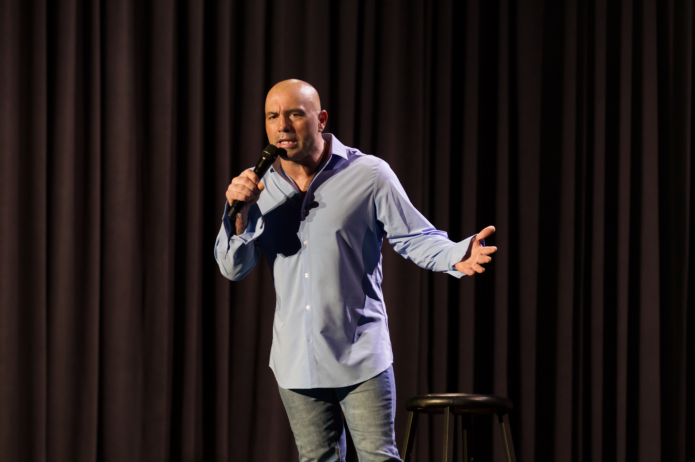
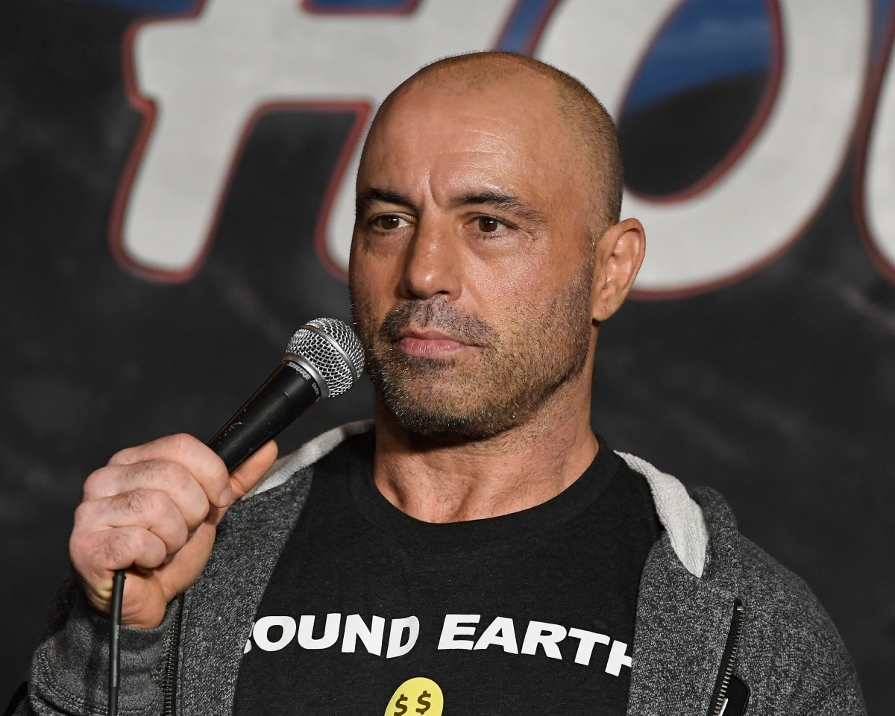
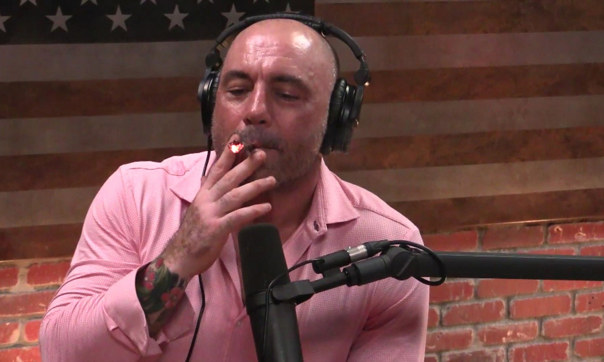

Joseph James Rogan (born August 11, 1967) is an American comedian and podcast host. He has also worked as a mixed martial arts color commentator, television host, and occasional actor.
Rogan began a career in comedy in August 1988 in the Boston area. After relocating to Los Angeles in 1994, he signed an exclusive developmental deal with Disney and appeared as an actor on several television shows including Hardball and NewsRadio. In 1997, he started working for the Ultimate Fighting Championship (UFC) as an interviewer and color commentator. Rogan released his first comedy special in 2000. In 2001, he put his comedy career on hold after becoming the host of Fear Factor and would resume his stand-up career shortly after the show's end in 2006. In 2009, Rogan launched his podcast The Joe Rogan Experience. In various episodes of the show as well as other platforms, he has advocated for "long-form media."
Joseph James Rogan was born on August 11, 1967, in Newark, New Jersey. His grandfather had moved his family there in the 1940s. He is of three-quarters Italian and one-quarter Irish descent. His father, Joseph, is a former police officer in Newark. Rogan's parents divorced when he was five; he has not been in contact with his father since he was seven. Rogan recalled: "All I remember of my dad are these brief, violent flashes of domestic violence ... But I don't want to complain about my childhood. Nothing bad ever really happened to me ... I don't hate the guy." From ages 7 to 11, the family lived in San Francisco, California, followed by a move to Gainesville, Florida when he was eleven. They settled in Newton Upper Falls, Massachusetts, where Rogan attended Newton South High School and graduated from in 1985.
Rogan participated in Little League Baseball but developed an interest in martial arts in his early teens. He recalled being "terrified of being a loser" as a child, and martial arts "gave me not just confidence, but also a different perspective of myself and what I was capable of. I knew that I could do something I was terrified of and that was really difficult, and that I could excel at it. It was a big deal for me". Martial arts were "the first thing that ever gave me hope that I wasn't going to be a loser. So I really, really gravitated toward it". At fourteen Rogan took up karate and a year later, started taekwondo. At nineteen, he won the US Open Championship taekwondo tournament as a lightweight. He was a Massachusetts full-contact state champion for four consecutive years and became a taekwondo instructor. Rogan also practiced amateur kickboxing and held a 2–1 record; he retired from competition at 21 as he began to suffer from frequent headaches and feared worse injuries.
He attended University of Massachusetts Boston but found it pointless and dropped out early. He lived in the Boston area until he was 24, then moved to New York City.